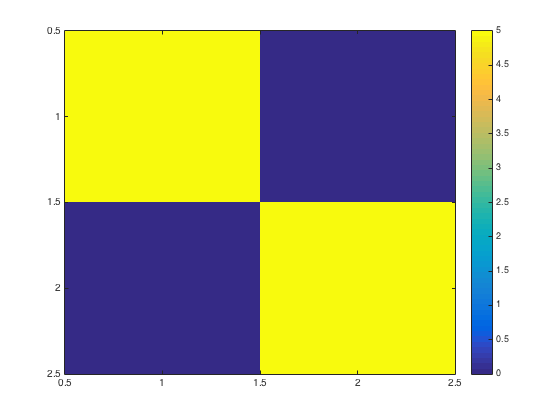
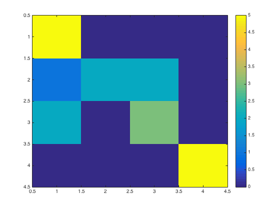

Contents
Classification using svm
- For CoSMoMVPA's copyright information and license terms, #
- see the COPYING file distributed with CoSMoMVPA. #
if ~cosmo_check_external('svm',false)
fprintf('No SVM implementation is available, skipping\n');
return
end
Define data
config=cosmo_config();
data_path=fullfile(config.tutorial_data_path,'ak6','s01');
data_fn=fullfile(data_path,'glm_T_stats_perrun.nii');
mask_fn=fullfile(data_path,'vt_mask.nii');
ds=cosmo_fmri_dataset(data_fn,'mask',mask_fn,...
'targets',repmat(1:6,1,10)',...
'chunks',floor(((1:60)-1)/6)+1)';
ds=cosmo_remove_useless_data(ds);
Two class classification
ds_2class=cosmo_slice(ds, ds.sa.targets==2 | ds.sa.targets==5);
ds_2class_train=cosmo_slice(ds_2class,ds_2class.sa.chunks<=5);
ds_2class_test=cosmo_slice(ds_2class,ds_2class.sa.chunks>5);
pred2=cosmo_classify_svm(ds_2class_train.samples,...
ds_2class_train.sa.targets,...
ds_2class_test.samples);
fprintf('2-class accuracy %.3f\n', sum(pred2==ds_2class_test.sa.targets)/numel(pred2));
mx=cosmo_confusion_matrix(ds_2class_test.sa.targets,pred2);
imagesc(mx);
colorbar();
2-class accuracy 1.000

Four class classification
ds_4class=cosmo_slice(ds, ds.sa.targets>=2 & ds.sa.targets<=5);
ds_4class_train=cosmo_slice(ds_4class,ds_4class.sa.chunks<=5);
ds_4class_test=cosmo_slice(ds_4class,ds_4class.sa.chunks>5);
pred4=cosmo_classify_svm(ds_4class_train.samples,...
ds_4class_train.sa.targets,...
ds_4class_test.samples);
fprintf('4-class: accuracy %.3f\n', sum(pred4==ds_4class_test.sa.targets)/numel(pred4));
mx=cosmo_confusion_matrix(ds_4class_test.sa.targets,pred4);
imagesc(mx);
colorbar();
4-class: accuracy 0.750
